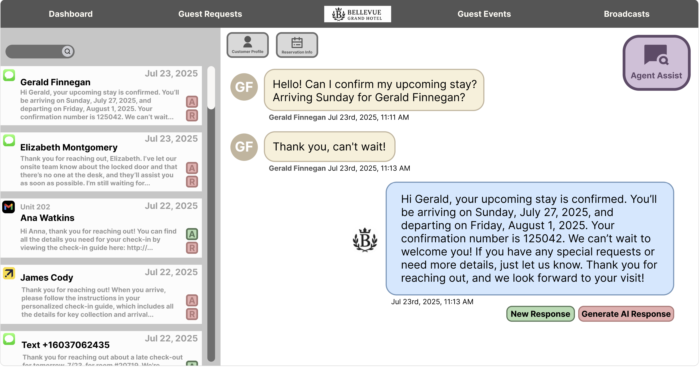
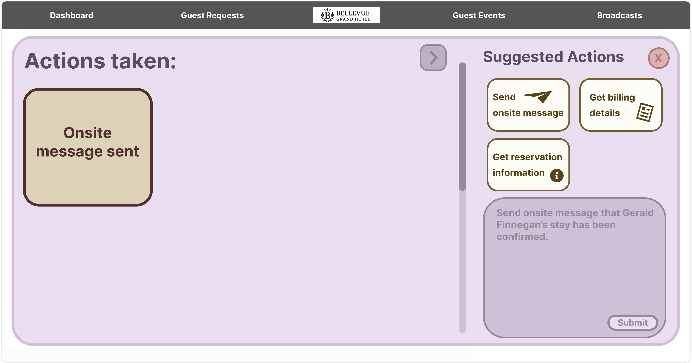
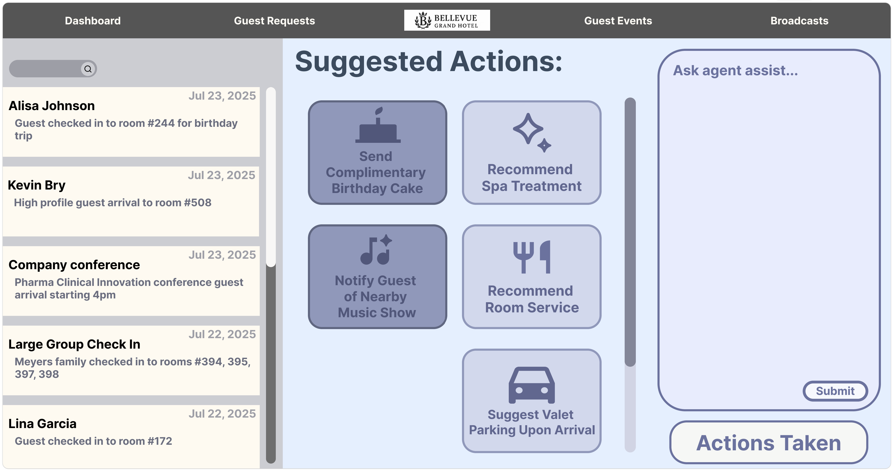
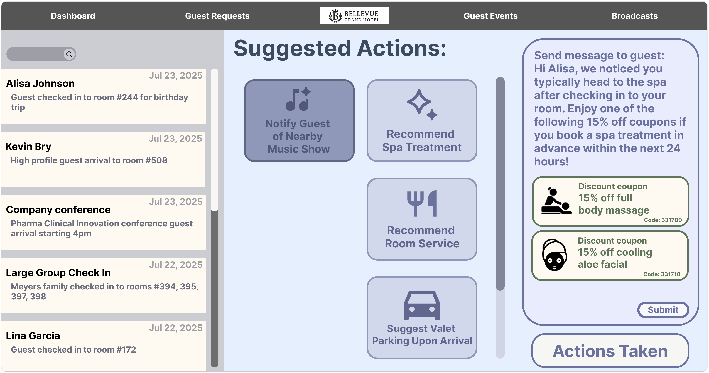
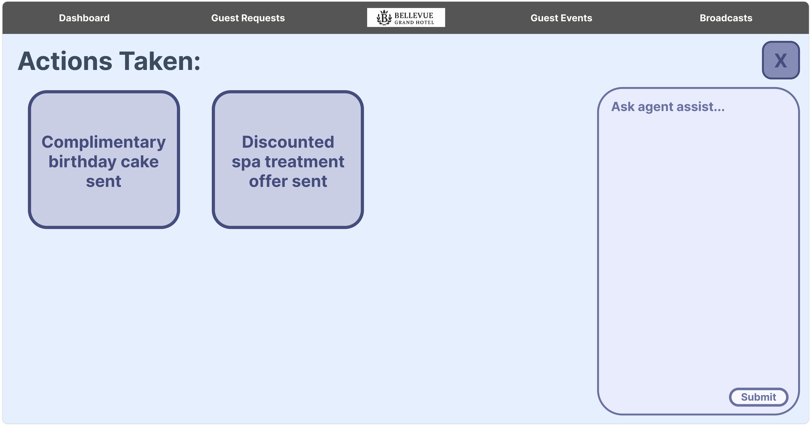

Homescreen AI
An AI-powered hospitality operations platform that helps hotel teams manage guest communication, coordinate service requests, and automate personalized concierge actions.
Overview
Homescreen AI brings guest messaging, reservation information, operational alerts, and service workflows into one interface. The platform supports more than 1,000 users across guest services, employee permissions, notifications, and analytics workflows.
I worked as a Software Development Engineer Intern, contributing production-facing features that helped hospitality teams respond to guests faster and coordinate actions across departments.
What I built
I developed a production-ready React interface from Figma prototypes, creating reusable components and integrating back-end APIs across multiple product modules. My work included guest-request conversations, reservation context, event alerts, action tracking, and role-specific operational controls.
I implemented interface flows for personalized notifications and concierge actions such as early check-in, room assignment, cleaning requests, onsite messages, and service recommendations. These features reduced time spent on manual workflows by 30 percent while keeping employees in control of each action.
AI integration
I built the interface for Agent Assist, which uses guest conversations, reservation details, and event context to surface relevant next actions. Employees can generate responses, retrieve information, send operational messages, and review personalized recommendations from the same workspace.
I designed the interaction patterns that connect AI suggestions to executable workflows, including action cards, contextual prompts, confirmation states, and an action history. This made the AI useful within daily hotel operations instead of isolating it in a separate chatbot.





